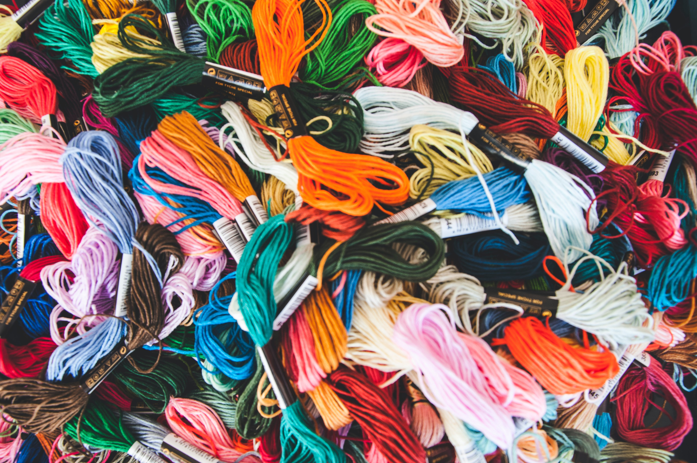

다이소에 가면 평생 하지도 않던 디즈니십자수가 눈에 띠는 날이 있다. 그 날은 심심함의 지수가 어깨 위로 차올랐나보다. '작품'이 완성될 순간의 상상과 어디에 전시를 해둘 지 정해두며 작품의 베이스를 품에 안으며 방으로 왔다. 베이스에 손을 대니 시간은 빠른 속도로 째깍거리며 지나갔다. 완성되기까지 일주일을 바라보고 시도한 일이지만 시간이 새벽4시를 지날 때 알아차렸다. 이건 한달 이상 걸리겠다고 그렇게 일주일이 지났고 얼굴부분만이 색으로 뒤덮혔다. 만족스러웠다. 손이 아픈지도 시간이 가는 지도 모르고 채워지는게 기쁨이었다.
다음번에는 욕심부리지말고 작은 걸 사자.그러면 더 큰 기쁨을 누릴 것이라.
